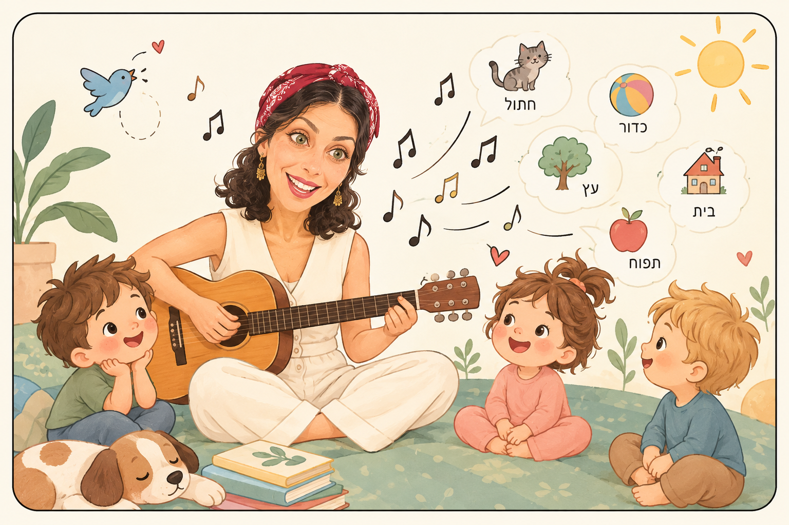

למה ילדים לומדים כל כך טוב דרך שירים?
מנגינה, קצב וחזרתיות ברכישת שפה ואוצר מילים בגיל הרך
פעוט שעדיין מתקשה לומר משפט שלם - אבל ברגע שמתחיל השיר האהוב עליו, הוא כבר יודע בדיוק איזו מילה מגיעה עכשיו. כל הורה מכיר את הרגע הזה. השאלה היא: למה זה קורה? האם ילדים באמת לומדים מילים אחרת כשהן מגיעות בתוך שיר?
חשוב לומר כבר בפתיחה: התשובה המדעית לא פשוטה כמו "שירה תמיד עדיפה על דיבור". המחקר מראה יתרון ברור לשירה בתנאים מסוימים ובגילים מסוימים - ולא תמיד. וזה בדיוק מה שהופך את התמונה למעניינת יותר, לא פחות.
מה קורה במוח המתפתח כששרים
אפשר לתאר את זה כשרשרת: מנגינה מושכת קשב → קצב יוצר ציפייה → חזרתיות מספקת חשיפות חוזרות לאותה מילה → המבנה המוזיקלי מדגיש הברות וגבולות בין מילים → נוצרת אסוציאציה בין הצליל, המילה והמשמעות → הזיכרון מתחזק. כל חוליה בשרשרת הזו נבדקה במחקר בפני עצמה - וזה מה שמאפשר לנו להבין לא רק ששירה עוזרת, אלא גם איך ולמי.
מה המחקר באמת מראה: שישה ממצאים מרכזיים
מילים בשיר מול מילים מדוברות. מחקר של Ma ועמיתיה (Quarterly Journal of Experimental Psychology) בדק ישירות למידת מילים חדשות אצל ילדים בגילים שונים. אצל בני שנה עד שנתיים, מילים חדשות נלמדו טוב יותר כשהושרו מאשר כשנאמרו בדיבור רגיל המכוון למבוגרים - ובקבוצת הגיל הצעירה ביותר נמצאה למידה אמינה של מילים מושרות בלבד.
גם תינוקות בני יומם מגיבים אחרת למנגינה. מחקר של François ועמיתיו (Scientific Reports) בדק תגובות מוחיות של תינוקות שזה עתה נולדו לרצפי הברות, בתנאי מדובר ובתנאי מושר. התינוקות זיהו הפרות במבנה ה"מילים" רק בתנאי המושר - והתגובה המוחית שלהם לרצפים המושרים ניבאה את גודל אוצר המילים שלהם בגיל 18 חודשים.
הקצב עצמו, לא רק המנגינה, עושה עבודה. מחקר נוסף על תינוקות בני יומם השווה שיר, חרוז קצבי ודיבור רגיל, ומצא יתרון ללמידה דווקא בתנאי החרוז הקצבי - מה שמרמז שמבנה קצבי-צפוי, ולא רק מנגינה, הוא חלק מרכזי בסיפור.
תינוקות מסוגלים "לחלץ" מילים מתוך שירים. מחקר EEG על 40 תינוקות בני 10 חודשים הראה שהמוח שלהם מזהה מילים שחוזרות בתוך שירי ילדים - כלומר מסוגל לפלח ולעבד מילים מתוך רצף שירה, גם אם לא הוכח באותו מחקר שהם מזהים אותן מילים בתוך דיבור רציף אחר כך.
מה קורה בבית, בפועל. מחקר של Franco ועמיתיה עקב אחר משפחות בחיי היום-יום: חשיפה לשירה הורה-תינוק בגיל 6 חודשים ניבאה יתרון במדדי שפה בשנה השנייה לחיים. זה מחקר חשוב כי הוא לא ניסוי מעבדה חד-פעמי, אלא שגרה ביתית אמיתית.
גם "מנגינת הדיבור" לבדה עוזרת. ניסוי קלאסי של Thiessen, Hill ו-Saffran הראה שתינוקות מצליחים לחלץ מילים מתוך רצף דיבור רק כאשר הוא נאמר ב"דיבור מכוון-תינוק" (אותו טון מלודי ומוגזם שמבוגרים משתמשים בו באופן טבעי) - ולא כשאותו תוכן נאמר בדיבור רגיל המכוון למבוגרים. כלומר גם לפני שמגיעים לשירה ממש, מלודיה והדגשה בדיבור עצמו כבר עוזרות למוח הצעיר למצוא גבולות בין מילים.
למה חזרתיות כל כך חשובה
כל אחד מהמחקרים למעלה נשען, בדרך זו או אחרת, על חזרתיות: אותן הברות שוב ושוב, אותו מבנה קצבי שחוזר על עצמו, אותה מילה שמופיעה בכל בית מחדש. חזרתיות היא לא "שעמום" מבחינת מוח צעיר - היא בדיוק ההפך: כל חשיפה חוזרת מחזקת מעט את מה שכבר נלמד, ובמקביל פותחת מקום קטן לתשומת לב למשהו חדש בתוכה שלא הבחינו בו קודם. זו גם הסיבה שילדים מבקשים לשמוע את אותו שיר שוב ושוב - זו לא עקשנות, זו למידה בדרך היחידה שבאמת עובדת אצלם.
למה שיר אינטראקטיבי עם הורה שונה מהשמעת מוזיקה ברקע
לשני הדברים יש מקום, אבל הם לא זהים. כששרים ביחד עם ילד - ולא רק משמיעים לו שיר - נוסף לתהליך גם ממד של אינטראקציה: הילד לומד להקשיב לקול של מישהו אחר, להתאים את עצמו אליו, ולהיות שותף ולא רק צופה. זו אחת הדרכים הראשונות שבהן ילד מתרגל להיות חלק ממשהו גדול ממנו.
איך בונים שיר שבאמת תומך ברכישת מילים
מהמחקרים עולה כיוון ברור: שיר שרוצה לתמוך בשפה לא חייב להיות מורכב - להפך. מבנה קצבי צפוי, חזרה על אותה מילת-מפתח בכל בית, הדגשה ברורה של המילה החדשה, וקצב לא מהיר מדי - כל אלה נותנים למוח הצעיר את מה שהוא צריך כדי לפלח, לזהות ולזכור. זו בדיוק הסיבה שלשיר ילדים "פשוט" יש כל כך הרבה עבודה מאחוריו.
למה "סיפור מושר" הוא שילוב מעניין במיוחד?
כי יש בו כמה שכבות בו-זמנית: הסיפור נותן למילה הקשר ומשמעות; התמונה נותנת לה ייצוג חזותי; המנגינה נותנת לה מבנה שקל לזהות; החזרתיות מאפשרת לפגוש אותה שוב; וההשתתפות של הילד הופכת אותו ממאזין פסיבי לשותף פעיל. זה בדיוק מה שעומד מאחורי הסיפורים המושרים כמו שתי ידיים חברות טובות, זמן צחצוח ויום ביער - כל אחד מהם בונה עולם קטן שילד יכול להיכנס אליו עם כל החושים, לא רק להאזין לו.
חשוב לומר בבירור: המחקר תומך בעקרונות שעליהם נשען הרעיון - מנגינה, קצב, חזרתיות, אינטראקציה ולמידת מילים - אך אינו מוכיח שסיפור מושר ספציפי משפר התפתחות שפה. אנחנו לא טוענות ל"שיטה" מוכחת מדעית, אלא לגישה שנשענת על עקרונות מבוססים בהתפתחות הילד.
כשילד שר, הוא לא רק שר. הוא מקשיב, צופה, מצפה, חוזר, זוכר - ולאט־לאט נותן לצלילים משמעות. כך אפשר להתחיל לגלות עולם שלם דרך צלילים.
מקורות עיקריים: Ma et al., Quarterly Journal of Experimental Psychology · François et al., Scientific Reports · מחקר על מבנה קצבי אצל תינוקות בני יומם · מחקר EEG על פילוח מילים מתוך שירים אצל תינוקות · Franco et al. על שירת הורה-תינוק בבית · Thiessen, Hill & Saffran על דיבור מכוון-תינוק · מחקר משווה (2025) על למידת שמות עצמים בגילאי 4.